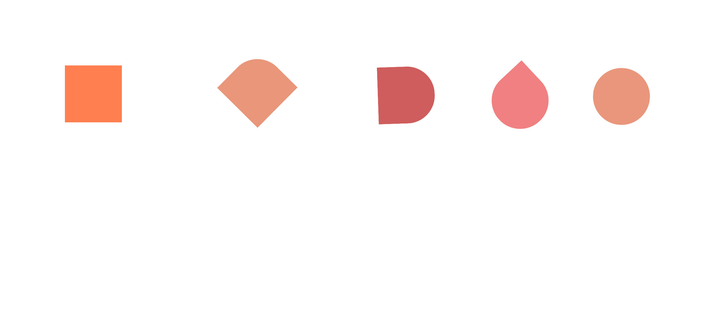

Suite au cours sur les animations CSS, nous allons mettre en pratique les différentes propriétés CSS correspondant à ces instructions.
Vous allez trouver ci-dessous différens exercices vous permettant de les manipuler.
Reproduire sur le seul cadre présent et en animation les différentes formes enchainées dans l'image 
.square-to-circle { background-color:#ff7f50; height:200px; margin:50px auto; width:200px; animation:square-to-circle 5s infinite cubic-bezier(1,.015,.295,1.225) alternate; } @keyframes square-to-circle { 25% { background-color:#ea967a; border-radius:50% 0 0 0; transform:rotate(45deg); } 50% { background-color:#cf5d5d; border-radius:50% 50% 0 0; transform:rotate(90deg); } 75% { background-color:#f18082; border-radius:50% 50% 50% 0; transform:rotate(135deg); } 100% { background-color:#ea967c; border-radius:50%; transform:rotate(180deg); } }<div class="square-to-circle"></div>
Pour cet exercice, vous devez transformer et/ou animer chacun des éléments du bandeau selon le story-board suivant :
.sky { background-color:#007fd5; height:480px; overflow:hidden; position:relative; /* animations */ animation:sky_bg 50s infinite; } .moon { background:transparent url("assets/images/13_-_Les_animations_CSS/moon.png") center center no-repeat; height:100%; position:absolute; width:100%; /* animations */ animation:moon 50s infinite; } .clouds_one,.clouds_two,.clouds_three { background-color:transparent; background-position:left center; background-repeat:repeat-x; height:100%; position:absolute; top:0; width:300000%; } .clouds_one { background-image:url("assets/images/13_-_Les_animations_CSS/cloud_one.png"); /* animations */ animation:cloud 50000s infinite; } .clouds_two { background-image:url("assets/images/13_-_Les_animations_CSS/cloud_two.png"); /* animations */ animation:cloud 75000s infinite; } .clouds_three { background-image:url("assets/images/13_-_Les_animations_CSS/cloud_three.png"); /* animations */ animation:cloud 100000s infinite; } @keyframes sky_bg { 0% { background-color:#007fd5; } 50% { background-color:#000000; } 100% { background-color:#007fd5; } } @keyframes cloud { 0% { left:0; } 100% { left:-300000%; } } @keyframes moon { 0% { left:50%; opacity:0; transform:scale(.5); } 50% { opacity:1; transform:scale(.75); } 100% { left:-50%; opacity:0; transform:scale(.5); } }<div class="sky"> <div class="moon"></div> <div class="clouds_one"></div> <div class="clouds_two"></div> <div class="clouds_three"></div> </div>